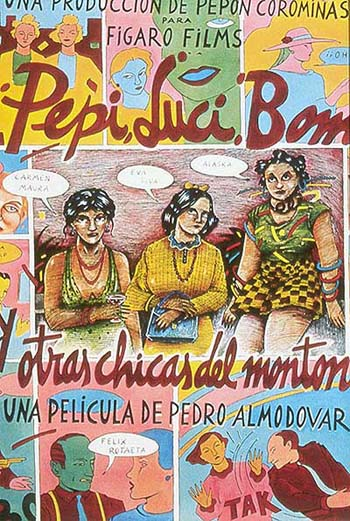
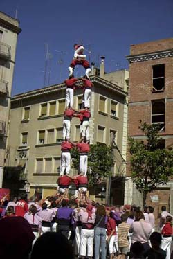

Španske slike, 3. deo
U ovom trećem (i poslednjem nastavku) serijala o Španiji, pisaću o kulturi u periodu nakon Frankove smrti.
Na osnovu informacija koje sam našla, tu ima nekoliko paralelno dešavajućih fenomena. Jedan od njih je La Movida Madrilena. Prema Wikipedii, to je sociokulturni pokret koji se dešavao u Madridu (ali i u drugim španskim gradovima) nakon smrti Franka 1975. godine i predstavljao je ekonomski uspon Španije i ponovno buđenje španskog kulturnog identiteta. La Movida je još opisana i kao hedonistički i kulturni talas nalik britanskom Novom Talasu, a karakteristična je bila i upotreba lakih droga i slenga poznatog kao cheli.
Više o celom pokretu ovde i ovde - noćni život, barovi i šta je od svega ostalo 25 godina kasnije.
Pedro Almodovar je po mišljenju različitih autora režiser koji je u svojim ranim filmovima naslikao život tog perioda, odnosno, kako se jedan od njih lepo izrazio, njegovi filmovi reflektuju 'drug-crazed, sexually liberated, and colorful what-the-hell 1980's in Madrid'.
***
Jedan od španskih fenomena u periodu procvata demokratije bila je i pornografija. Decenijama veoma konzervativna zemlja i društvo (zbog uticaja režima i crkve), u kojoj žene nisu mogle da rade ili putuju bez saglasnosti muža, a razvodi su bili mogući samo izuzetno retko, od druge polovine sedamdesetih i kasnije, pornografija je postala opšte raširena. Tako je recimo 1976. godine Playboy u ovoj zemlji bio zvanično zabranjen, da bi deset godina kasnije ovaj i drugi strani magazini 'za odrasle' smatrani suviše blagim i na tržištu preteknuti od strane domaćih izdanja sličnog tipa. U istom periodu su u velikim španskim gradovima necenzurisani erotski filmovi bili u svim bioskopima, a prostitutke i javne kuće reklamirale su se i u najozbiljnijim novinama.
***
Kao što sam pominjala, period uspostavljenja demokratije bio je i period decentralizacije, kada su neki regioni, kao Katalonija, radili na jačanju svog specifičnog identiteta, kulture, ekonomije i uprave.
Jedna od katalonskih tradicija, ponovo oživljena poslednjih decenija, jesu tzv. ljudske kule, koje se prave prilikom gradskih proslava i za koje udruženja dobijaju pomoć lokalne samouprave i medijsku pažnju.
Mnogo više o tome ovde.
***
Iako sam ukratko pominjala i ekonomiju i politiku i medije i društvene uslove, naravno da mnogo bitnih stvari u vezi španske tranzicije od autoritarnog društva do demokratije i ekonomske, socijalne i kulturne transformacije nisam pomenula. Najviše zato što bih ipak htela da ovo štivo bude pretežno light. Mada i informativno. Eto, jedna od činjenica koje nisam pominjala jeste da je njihov, i dalje aktuelan kralj, imao značajnu pozitivnu ulogu u obnovi demokratskog društva.
Na leto, kad se vratim sa svoje male evropske ture, verovatno će biti još toga i o Španiji.
Za sada, kraj
Komentari
elektrokuhinja | 25.05.07 09:22
Secate se onih reklama za Industriju u kojima se pominjala Ruta del Bakalao?
 RSS feed
RSS feed
 sadržaji se objavljuju pod
sadržaji se objavljuju pod
hm, ljudske kule dobijaju pomoc lokalne samouprave... ovde bi slicnu pomoc lokalne samouprave moglo da dobije jedino udruzenje popova koje pravi kulu... grrr! ljut sam!